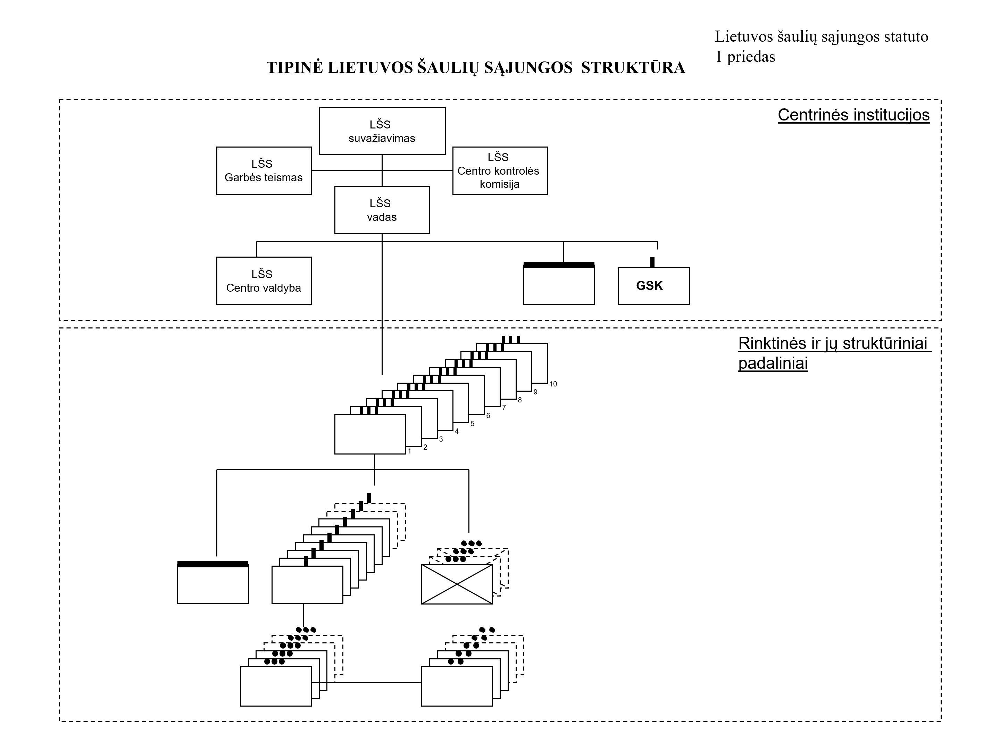
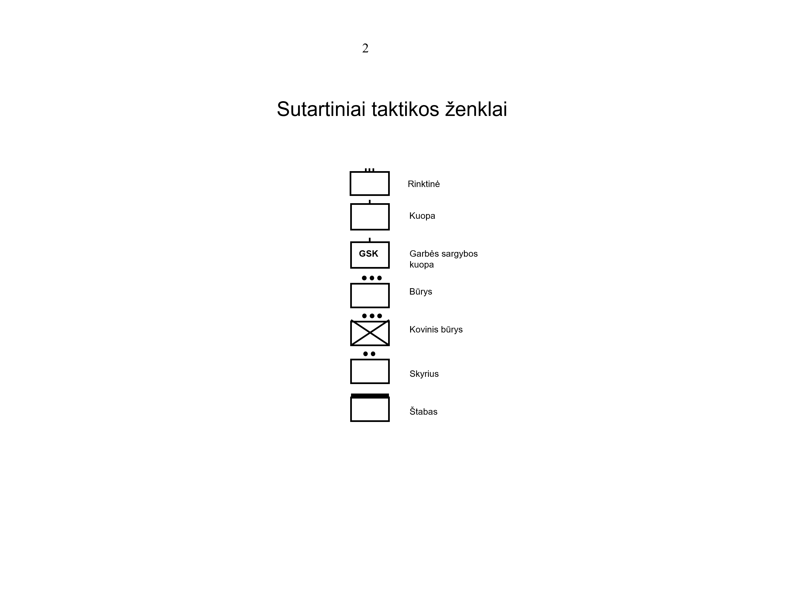
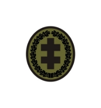
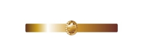
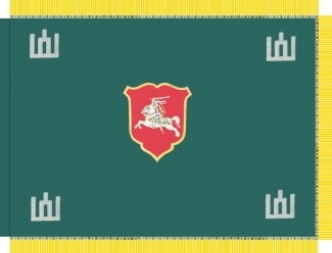
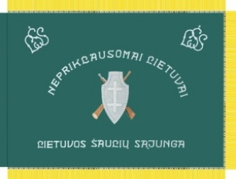

Šio puslapio turinys paskutinį kartą atnaujintas 2023-02-04, pagal 2020-09-01 oficialaus dokumento redakciją. Originalus dokumentas.
LIETUVOS ŠAULIŲ SĄJUNGOS STATUO PRIEDAI
1 PRIEDAS: TIPINĖ LIETUVOS ŠAULIŲ SĄJUNGOS STRUKTŪRA


2 PRIEDAS: ŠAULIŲ UNIFORMŲ TIPAI
I SKYRIUS: LAUKO UNIFORMA
1. Lauko uniformą sudaro kepurė, panama, beretė, kepuraitė, kostiumas, marškiniai, šiltas švarkas, striukė, trikotažiniai marškinėliai, diržas, pirštinės, batai:
1.1. Kepurė – slepiamųjų spalvų arba vienos iš jų audinio, su pakietintu snapeliu.
1.2. Panama – slepiamųjų spalvų arba vienos iš jų audinio, su plačiais kraštais, apsaugančiais nuo saulės.
1.3. Beretė – klasikinio modelio, žalios spalvos. Vakarų (jūros) šaulių rinktinės šaulių beretė yra juodos spalvos.
1.4. Kepuraitė – dengianti ausis, šilta, samanų spalvos.
1.5. Kostiumas – palaidinė ir kelnės slepiamųjų spalvų audinio. Palaidinė tiesaus kirpimo, užsegama priekyje. Palaidinės priekyje ir ant rankovių – uždėtinės kišenės. Kelnės ilgos, su paslėptu užsegimu ir kišenėmis.
1.6. Šiltas švarkas – samanų spalvos šiauštos medžiagos. Švarkas su aukšta apykakle, priekyje užsegamas, su šoninėmis kišenėmis.
1.7. Striukė – slepiamųjų spalvų arba vienos iš jų audinio, tiesaus silueto, su aukšta apykakle, užsegama priekyje, šiltinta, su gobtuvu, priekyje ir ant rankovių – uždėtinės kišenės.
1.8. Marškinėliai – ilgomis arba trumpomis rankovėmis, slepiamųjų spalvų arba vienos iš jų.
1.9. Diržas – juodos spalvos, užsegamas geltono metalo sagtimi.
1.10. Pirštinės – juodos arba samanų spalvos.
1.11. Batai – juodos arba rudos spalvos, odiniai, suvarstomi, pusilgiais aulais. Aulai gali būti kombinuoti su audiniu.
Lauko uniformos dėvėjimo pavyzdžiai:

II SKYRIUS: IŠEIGINĖ ŠAULIO UNIFORMA
2. Šaulių išeiginę uniformą sudaro beretė, uniforminė kepurė (vyrams), uniforminė kepuraitė (moterims), uniforminis kostiumas, sijonas (moterims), marškiniai (vyrams), palaidinė (moterims), megztinis, kaklaraištis (vyrams), kaklajuostė (moterims), diržas, kojinės, pėdkelnės (moterims), šalikas, pirštinės, pusbačiai (vyrams), bateliai (moterims), žieminiai batai, striukė, žieminė striukė ir lietpaltis:
2.1. Beretė – klasikinio modelio, tamsiai žalios spalvos. Vakarų (jūros) šaulių rinktinės šaulių beretė yra juodos spalvos.
2.2. Uniforminė kepurė – tamsios rudai žalios spalvos audinio, su juodos spalvos snapeliu. Viršutinė kepurės dalis paaukštinta. Virš snapelio dviem mažomis uniformos sagomis tvirtinamas aukso spalvos dirželis. Lietuvos šaulių sąjungos (toliau – (LŠS) vado kepurės snapelis dekoruojamas aukso spalvos stilizuotų ąžuolo lapų vainiku. Vakarų (jūros) šaulių rinktinės šaulių uniforminė kepurė yra baltos ir juodos spalvų.
2.3. Uniforminė kepuraitė – tamsios rudai žalios spalvos audinio, skrybėlės tipo, standi. Viršutinė dalis platėja į apačią. Užlenkti į viršų kepuraitės kraštai priekyje suformuoja snapelį. Virš snapelio tvirtinamas aukso spalvos dirželis. LŠS vadės kepurės snapelis dekoruojamas aukso spalvos stilizuotų ąžuolo lapų vainiku. Vakarų (jūros) šaulių rinktinės šaulių uniforminė kepurė yra baltos ir juodos spalvų.
2.4. Uniforminis kostiumas – švarkas ir kelnės tamsios rudai žalios spalvos audinio. Švarkas užsegamas keturiomis didelėmis sagomis. Krūtinės aukštyje – dvi uždėtinės kišenės su antkišeniais, užsegamais mažomis uniformos sagomis, juosmens aukštyje – dvi įleistinės kišenės su antkišeniais, užsegamais mažomis uniformos sagomis. Pečių linijoje tvirtinami antpečiai. Švarko nugaros pusėje yra skeltukas. LŠS vado švarko apykaklės kampai dekoruojami siuvinėtais aukso spalvos ąžuolo lapais, o rankovės su rankogaliais, kurių prisiuvimo siūlėje įsiūtas geltonas apvadas. Moterų švarkas skiriasi užsegimo kryptimi ir neturi viršutinių kišenių. Kelnės su dviem įleistinėmis kišenėmis priekinėje dalyje ir viena įleistine kišene užpakalinės dalies dešinėje pusėje. LŠS vado kelnių šonuose įsiūti geltoni įsiuvai. Moterų kelnės skiriasi užsegimo kryptimi. Vakarų (jūros) šaulių rinktinės šaulių uniforminis kostiumas yra juodos spalvos su dviem eilėmis sagų, kairėje pusėje, krūtinės aukštyje – viena įleista kišenė.
2.5. Sijonas – tamsios rudai žalios spalvos audinio, tiesaus kirpimo, į apačią truputį siaurėjantis, su prisiūtu juosmeniu ir ąselėmis diržui. Vakarų (jūros) šaulių rinktinės šaulių sijonas yra juodos spalvos.
2.6. Marškiniai – baltos spalvos, klasikinio modelio, pusiau prigludę, su uždėtinėmis kišenėmis ties krūtine. Marškiniai ilgomis ir trumpomis rankovėmis. Į rankovės prisiuvimo siūlę įleisti antpečiai, ant kurių maunamos movos.
2.7. Palaidinė – baltos spalvos, pusiau prigludusio silueto, statytomis trumpomis rankovėmis, apykaklė atverčiama. Dešinėje krūtinės pusėje – uždėtinė kišenė su antkišeniu, užsegamu saga. Palaidinės ilgomis ir trumpomis rankovėmis. Į rankovės prisiuvimo siūlę įleisti antpečiai, ant kurių maunamos movos.
2.8. Megztinis – tamsios rudai žalios spalvos, su trikampe kaklo iškirpte. Rankovės ties alkūnėmis ir pečiai apsiūti tamsios rudai žalios spalvos audinio detalėmis. Kairėje pusėje, krūtinės aukštyje, prisiūta tamsios rudai žalios spalvos audinio kišenė. Pečių linijoje prisiūti to paties audinio antpečiai, ant kurių tvirtinamos antpečių movos. Vakarų (jūros) šaulių rinktinės šaulių megztinis yra mėlynos spalvos.
2.9. Kaklaraištis – juodos spalvos, klasikinio modelio.
2.10. Kaklajuostė – juoda, klasikinio modelio.
2.11. Diržas – juodos spalvos, užsegamas geltono metalo sagtimi.
2.12. Kojinės – juodos spalvos.
2.13. Pėdkelnės – smėlio spalvos.
2.14. Šalikas – trikotažinis, samanų spalvos. Vakarų (jūros) šaulių rinktinės šaulių šalikas yra baltos spalvos.
2.15. Pirštinės – pirštuotos, juodos spalvos.
2.16. Pusbačiai – klasikinio stiliaus, natūralios odos, suvarstomi, juodos spalvos.
2.17. Bateliai – klasikinio stiliaus natūralios odos laiveliai, su vidutinio aukščio pakulne, juodos spalvos.
2.18. Žieminiai batai:
2.18.1. vyrų – klasikinio stiliaus natūralios odos šiltinti aulinukai, užsegami užtrauktuku, juodos spalvos;
2.18.2. moterų – klasikinio stiliaus natūralios odos aulinukai, su vidutinio aukščio pakulne, šiltinti, užsegami užtrauktuku, juodos spalvos.
2.19. Striukė – tamsios rudai žalios spalvos audinio, užsegama paslėptu užtrauktuku. Striukės apačioje dvi vertikalios įleistinės kišenės. Pečių linijoje prisiūti antpečiai, ant kurių tvirtinamos antpečių movos. Moterų striukė skiriasi užsegimo kryptimi. Vakarų (jūros) šaulių rinktinės šaulių striukė yra juodos spalvos.
2.20. Žieminė striukė – tamsios rudai žalios spalvos audinio, užsegama paslėptu užtrauktuku, su šiltalu viduje. Juosmens aukštyje – dvi uždėtinės kišenės su antkišeniais, krūtinės aukštyje – dvi įleistinės kišenės. Prie striukės apykaklės prisegama natūralaus tamsiai pilko kailio apykaklė. Pečių linijoje prisiūti antpečiai, ant kurių tvirtinamos movos. Moterų striukė skiriasi užsegimo kryptimi ir nėra viršutinių kišenių. Vakarų (jūros) šaulių rinktinės šaulių žieminė striukė yra juodos spalvos.
2.21. Lietpaltis – tamsios rudai žalios spalvos audinio, užsegamas penkiomis didelėmis uniformos sagomis, juosiamas diržu su audinio spalvos sagtimi. Juosmens aukštyje – dvi įleistinės kišenės. Rankovių apačioje prisiuvamos dekoratyvinės juostelės, kurių vienas galas tvirtinamas didele uniformos saga. Lietpalčio viduje įsegamas šiltalas. Pečių linijoje prisiūti antpečiai, ant kurių tvirtinamos movos. Moterų lietpaltis skiriasi užsegimo kryptimi.
LŠS išeiginės uniformos dėvėjimo pavyzdžiai:**


III SKYRIUS: GARBĖS SARGYBOS ŠAULIO UNIFORMA
3. Garbės sargybos šaulio uniformą sudaro švarkas, kelnės, šaulio paltas, kuopos vado paltas, kepurė, pirštinės, šalikas, avalynė, diržas, pirštinės:
3.1. Švarkas – tamsios rudai žalios spalvos audinio, užsegamas penkiomis didelėmis sagomis. Krūtinės aukštyje dvi uždėtinės kišenės su antkišeniais, užsegamais mažomis uniformos sagomis, juosmens aukštyje – dvi įleistinės kišenės su antkišeniais, užsegamais mažomis uniformos sagomis. Pečių linijoje tvirtinami antpečiai. Švarko apykaklė stati, jos kampuose tvirtinami žalios spalvos trikampiai, apsiūti geltonu apvadu. Trikampių centre aukso spalvos Gediminaičių stulpai. Švarko rankovės su priekyje smailėjančiais rankogaliais, kurių prisiuvimo siūlėje įsiūtas geltonas apvadas. Švarko nugaroje yra skeltukas.
3.2. Kelnės – tamsios rudai žalios spalvos audinio, su dviem įleistinėmis kišenėmis priekinėje dalyje ir viena įleistine kišene užpakalinės dalies dešinėje pusėje. Kelnės siaurėjančios, bridžių tipo, apačioje baigiasi kilpa. Kelnių šonuose įsiūti geltoni įsiuvai.
3.3. Šaulio paltas – tamsios rudai žalios spalvos audinio, užsegamas viena eile, penkiomis didelėmis uniformos sagomis, rankovės su rankogaliais. Švarko nugaroje yra velkė ir skeltukas. Juosmens aukštyje – dvi įleistinės kišenės. Pečių linijoje prisiūti antpečiai, ant kurių tvirtinamos movos. Ant kairės rankovės, 60 mm atstumu nuo pečių linijos, prisiuvamas rankovės antsiuvas.
3.4. Kuopos vado paltas – tamsios rudai žalios spalvos audinio, užsegamas dviem eilėmis, dvylika didelių uniformos sagų. Rankovės su rankogaliais, kurių prisiuvimo siūlėje įsiūtas geltonas apvadas. Palto apykaklės kraštai apvesti geltonu apvadu. Švarko nugaroje yra velkė ir skeltukas. Juosmens aukštyje – dvi įleistinės kišenės. Pečių linijoje prisiūti antpečiai, ant kurių tvirtinamos movos.
3.5. Kepurė – tamsios rudai žalios spalvos audinio, su juodos spalvos snapeliu. Viršutinė kepurės dalis paaukštinta. Virš snapelio dviem mažomis uniformos sagomis tvirtinamas juodos spalvos dirželis, kuopos vado – aukso spalvos. Kepurės priekyje, centre, virš dirželio, tvirtinamas istorinis (1936 metų modelio) ženklas.
3.6. Pirštinės – juodos spalvos.
3.7. Šalikas – tamsios rudai žalios spalvos.
3.8. Avalynė – juodos spalvos.
3.9. Diržas – rudos spalvos.
3.10. Pirštinės – baltos spalvos.
LŠS Garbės sargybos šaulio uniformos dėvėjimo pavyzdžiai:

Priedo pakeitimai:
Nr. V-683, 2020-08-24, paskelbta TAR 2020-08-24, i. k. 2020-17745
3 PRIEDAS: ŠAULIŲ UNIFORMŲ SKIRIAMIEJI ŽENKLAI
I SKYRIUS: ŠAULIO ŽENKLAS
Šaulio ženklas yra baltos spalvos tamsinto metalo stilizuoto skydo formos ženklas. Jo centre reljefiškas dvigubas kryžius. Ženklo aukštis 47 mm, plotis 27 mm. Ženklas prisukamas to paties metalo veržlele. Šaulio ženklo miniatiūros aukštis 20 mm, plotis 12 mm.
II SKYRIUS: ŠAULIO ŽENKLO ANTSIUVAS
Šaulio ženklo antsiuvas – tai žalios spalvos stilizuotas skydas su centre esančiu juodu dvigubu kryžiumi. Skydo kraštas apvestas juodu apvadu. Antsiuvo aukštis 60 mm, plotis 35 mm.
III SKYRIUS: LIETUVOS ŠAULIŲ SĄJUNGOS GARBĖS ŠAULIO ŽENKLAS
Baltos spalvos tamsinto metalo ženklas yra stilizuoto skydo formos. Jo centre reljefiškas dvigubas kryžius. Ženklo skydas apjuostas aukso spalvos, tokios pat formos platesniu skydu, kurio kraštai reljefiškai padalinti spinduliais. Ženklo aukštis 56 mm, plotis 35 mm. Ženklas prisukamas baltos spalvos metalo veržlele. Šaulių sąjungos garbės šaulio miniatiūra – mažesnių matmenų toks pat ženklas: aukštis 24 mm, plotis 15 mm.
IV SKYRIUS: GEDIMINAIČIŲ STULPAI
Gediminaičių stulpai yra aukso spalvos metalo ažūrinis ženklas. Ženklo aukštis 18 mm, plotis 16 mm.
V SKYRIUS: ANTSIUVAS „LIETUVOS VALSTYBĖS VĖLIAVA“
Stačiakampio formos Lietuvos valstybės vėliavos spalvų antsiuvas, apvestas siauru juodu apvadu. Antsiuvo aukštis 30 mm, plotis 50 mm.
VI SKYRIUS: LŠS ŠTABO IR RINKTINIŲ ANTSIUVAI
Su Lietuvos heraldikos komisija suderintas skydo formos antsiuvas su LŠS vado patvirtinta LŠS padalinio simbolika.

VII SKYRIUS: IŠEIGINĖS KEPURĖS IR BERETĖS ŽENKLAS
Išeiginės kepurės priekyje, centre, virš dirželio, tvirtinamas istorinis (1936 metų modelio) ženklas. Beretės ženklas yra aukso spalvos metalo ažūrinis ovalo formos ženklas. Ženklo centre dvigubas reljefiškas kryžius, uždėtas ant stilizuotų ąžuolo lapų vainiko. Ženklo aukštis 40 mm, plotis 34 mm.
VIII SKYRIUS: LAUKO UNIFORMOS KEPURĖS, PANAMOS ŽENKLAS
Kasdienės uniformos kepurės ženklas yra ovalo formos žalios spalvos dugne įkomponuotas juodos spalvos dvigubas kryžius, apjuostas juodos spalvos stilizuotų ąžuolo lapų vainiku. Ženklo aukštis 50 mm, plotis 45 mm.

IX SKYRIUS: IŠEIGINĖS ŠAULIO IR GARBĖS SARGYBOS ŠAULIO UNIFORMOS SAGOS
Maža uniformos saga – skritulio formos, aukso spalvos, su reljefišku dvigubu kryžiumi centre ir iš po kryžiaus spinduliuojančiomis linijomis. Sagos skersmuo 14 mm.
Didelė uniformos saga – skritulio formos, aukso spalvos, su reljefišku dvigubu kryžiumi centre ir iš po kryžiaus spinduliuojančiomis linijomis. Sagos skersmuo 22 mm.
X SKYRIUS: VARDINIS ŽENKLAS
Vardiniai ženklai prie išeiginės ir garbės sargybos šaulio uniformų yra juodos spalvos plokštelė su baltos spalvos pavardės raidėmis, prie lauko uniformos – pavardė tamsios spalvos raidėmis šviesiame fone.
XI SKYRIUS: KAKLARAIŠČIO SEGTUKAS
Stačiakampė aukso spalvos metalo plokštelė su centre uždėtu to paties metalo reljefišku LŠS simboliu dvigubu reljefišku kryžiumi, kuris uždėtas ant stilizuotų ąžuolo lapų vainiko. Plokštelės aukštis 6 mm, ilgis 65 mm.

XII SKYRIUS: PAREIGŲ ŽENKLAI
Pareigų ženklai – su Lietuvos heraldikos komisija suderinti LŠS vado nustatytos spalvos ir dydžio simboliai ant antpečių ir movų.
Priedo pakeitimai:
Nr. V-683, 2020-08-24, paskelbta TAR 2020-08-24, i. k. 2020-17745
4 PRIEDAS: LIETUVOS ŠAULIŲ SĄJUNGOS VĖLIAVA
Vėliava yra dvipusė, žalios spalvos, 165 cm pločio ir 125 cm aukščio. Iš abiejų pusių vėliavos kraštai apsiūti 2 cm pločio ornamentuota juostele. Vėliavos averso centre pavaizduotas baltas šarvuotas raitelis su kalaviju ir skydu – Vytis – stilizuotame raudonos spalvos skyde. Visuose keturiuose kampuose – sidabro spalvos Gediminaičių stulpai. Vėliavos reverso centre pavaizduotas pilkos sidabro spalvos Vyčio kryžiaus skydas padėtas ant rudos spalvos sukryžiuotų šautuvo ir daudytės. Virš skydo puslankiu – sidabro spalvos raidėmis užrašas „Nepriklausomai Lietuvai“, skydo apačioje, palei vėliavos apatinę kraštinę, – užrašas „Lietuvos šaulių sąjunga“. Viršutiniuose vėliavos kampuose sidabro spalvos Lietuvos šaulių sąjungos inicialai „LŠS“. Vėliavos kraštai papuošti aukso (geltonos) spalvos kutais.
Vėliavos kotas tamsinto ąžuolo, dviejų dalių, per vidurį sutvirtintų auksuoto metalo jungtimi, jo viršuje yra auksuotas ietigalio pavidalo antgalis. Abiejose antgalio plokštumose įkomponuotas auksuotas dvigubas kryžius. Koto viršuje prie antgalio kaspinu surišta valstybės vėliavos spalvų juosta.


Priedo pakeitimai:
Nr. V-1004, 2019-11-29, paskelbta TAR 2019-11-29, i. k. 2019-19184
5 PRIEDAS: LIETUVOS ŠAULIŲ SĄJUNGOS ŽENKLAS
Lietuvos šaulių sąjungos ženklas yra mėlynos spalvos skydas su jo viduryje pavaizduotu dvigubu geltonu (aukso spalvos) kryžiumi ir geltonu (aukso spalvos) kraštu. Už skydo sukryžiuoti balti (sidabro spalvos) kalavijas, šautuvas ir daudytė. Skydą juosia geltonas (aukso spalvos) ąžuolo lapų vainikas su dešimčia gilių, po penkias simetriškai išdėstytų kairėje ir dešinėje ąžuolo lapų vainiko pusėse. Virš skydo – geltoni (aukso spalvos) lelijų žiedai, sujungti į vainiką (karūną).

Priedo pakeitimai:
Nr. V-381, 2017-05-03, paskelbta TAR 2017-05-04, i. k. 2017-07469
Lietuvos šaulių sąjungos statuto
6 PRIEDAS: (JAUNOJO) ŠAULIO ASMENS DUOMENŲ ANKETA
| Nuotrauka | 1. Pagrindiniai duomenys 1.1. Vardas, pavardė |
|---|---|
(vardas, spausdintinėmis raidėmis) |
|
(pavardė, spausdintinėmis raidėmis) 1.2. Rinktinės vado 20___ m. ____________ mėn. ___ d. įsakymu Nr. ___ priimtas (-ta) (jaunuoju) šauliu (-e). 1.3. Prisiekė (pasižadėjo) 20___ m. __________ mėn. ___ d. 1.4. Pažymėjimo Nr. _____ |
|
| 2. Gimimo data | 3. Narystė Šaulių sąjungoje |
| Pareigos | |
| 4. Asmens kodas | |
| 5. Gyvenamoji vieta | |
| 6. Tel. Nr. | 7. Karinė tarnyba Lietuvos Respublikos kariuomenėje |
| Data (nuo–iki) | |
| 8. Kraujo grupė | Karinis laipsnis |
| Karinė specialybė | |
| 9. Išsilavinimas | Kario priesaika (data) |
| 10. Darbovietė (mokymosi įstaiga), pareigos | |
| 11. El. paštas | |
| 12. Apdovanojimai | |
| 13. Nuobaudos | |
P R A Š Y M A S Prašau nuo 20___ m. _____ mėn. ___ d. priimti mane į Šaulių sąjungos ______________________ šaulių __ -osios rinktinės _______________ kuopą __________ šauliu. Neprieštarauju, kad būtų patikrinti mano anketiniai duomenys. Pasižadu per 14 kalendorinių dienų informuoti padalinio vadą apie mano anketinių duomenų pasikeitimą. __________________________________ (vardas ir pavardė, parašas) |
|---|
Stojimui neprieštarauju :* |
Šeimos nariai (pildo kandidato į jaunuosius šaulius tėvas, motina arba globėjas (kai vaikui nuo 11 iki 18 metų): Tėvas (globėjas) ____________________________________________________________________________ (vardas ir pavardė) ____________________________________________________________________________ (gyvenamoji vieta, tel.) Motina (globėja) ____________________________________________________________________________ (vardas ir pavardė) ____________________________________________________________________________ (gyvenamoji vieta, tel.) |
P R I E S A I K A AŠ, _________________________________________, TAPDAMAS ŠAULIU, JŪSŲ AKIVAIZDOJE PRISIEKIU BŪTI IŠTIKIMAS (-A) LIETUVOS VALSTYBEI, NEGAILĖDAMAS (-A) JĖGŲ IR GYVYBĖS GINTI IR SAUGOTI JOS NEPRIKLAUSOMYBĘ, TERITORINĮ VIENTISUMĄ IR KONSTITUCINĘ SANTVARKĄ. PAŽADU LAIKYTIS LIETUVOS RESPUBLIKOS KONSTITUCIJOS, LIETUVOS ŠAULIŲ SĄJUNGOS ĮSTATYMO, LIETUVOS ŠAULIŲ SĄJUNGOS STATUTO IR ŠAULIŲ ETIKOS KODEKSO, KITŲ ĮSTATYMŲ, SĄŽININGAI VYKDYTI ŠAULIO PAREIGAS IR VADŲ ĮSAKYMUS. PASIŽADU GERBTI ŽMOGAUS TEISES, SAUGOTI MAN PATIKĖTAS PASLAPTIS IR TURTĄ, RŪPINTIS LIETUVOS RESPUBLIKOS IR JOS TAUTOS GEROVE, VISUR ELGTIS KAIP DERA DORAM, DRAUSMINGAM IR NARSIAM ŠAULIUI. TEPADEDA MAN DIEVAS (prisiekti galima ir be paskutinio sakinio). __________________________________ (priesaiką davusiojo parašas) __________________________________________________________________ (priesaiką priėmusiojo pareigos, vardas, pavardė, parašas, data) |
|---|
P A S I Ž A D Ė J I M A S AŠ, ______________________________________________, TAPDAMAS JAUNUOJU ŠAULIU, JŪSŲ AKIVAIZDOJE IŠKILMINGAI PASIŽADU BŪTI IŠTIKIMAS (-A) LIETUVOS VALSTYBEI IR STROPIAI RENGTIS GINTI LIETUVOS LAISVĘ IR NEPRIKLAUSOMYBĘ. PAŽADU LAIKYTIS LIETUVOS RESPUBLIKOS KONSTITUCIJOS, LIETUVOS ŠAULIŲ SĄJUNGOS ĮSTATYMO, LIETUVOS ŠAULIŲ SĄJUNGOS STATUTO IR ŠAULIŲ ETIKOS KODEKSO, KITŲ ĮSTATYMŲ, SĄŽININGAI VYKDYTI JAUNOJO ŠAULIO PAREIGAS IR VADŲ ĮSAKYMUS. PASIŽADU GERBTI ŽMOGAUS TEISES, SAUGOTI MAN PATIKĖTAS PASLAPTIS IR TURTĄ, RŪPINTIS LIETUVOS RESPUBLIKOS IR JOS TAUTOS GEROVE, VISUR ELGTIS KAIP DERA DORAM, DRAUSMINGAM IR NARSIAM JAUNAJAM ŠAULIUI. TEPADEDA MAN DIEVAS (pasižadėti galima ir be paskutinio sakinio). __________________________________ (pasižadėjimą davusiojo parašas) ___________________________________________________________________ (pasižadėjimą priėmusiojo pareigos, vardas, pavardė, parašas, data) |
| Mokymų kursai |
| Data (nuo–iki) |
5. NARYSTĖS ŠAULIŲ SĄJUNGOJE SUTARTIS (sudaroma su šauliais) ____________________ (data) Šaulių sąjunga, atstovaujama ____________________________________________________________ šaulių rinktinės vado _________________________, ir Lietuvos Respublikos pilietis (-tė) ________________________________, gimęs (-usi) ___________________, gyvenantis (-ti) _____________________________________, a. k. _______________________, paso serija _______, Nr. _______, išduotas _________________________________________________, toliau vadinamas šauliu (-e), sudarėme šią sutartį: 1. Šaulių sąjunga įsipareigoja: 1.1 sudaryti šauliui sąlygas dalyvauti šaulių veikloje; 1.2. išduoti šaulio pažymėjimą; 1.3. užtikrinti socialines garantijas ir lengvatas, nustatytas šauliams Lietuvos Respublikos įstatymuose bei Šaulių sąjungos statute. 2. Šaulys (-ė) įsipareigoja: 2.1. vykdyti Šaulių sąjungos įstatymo, Šaulių sąjungos statuto ir kitų sąjungos vidaus tvarką ir veiklą reglamentuojančių dokumentų reikalavimus; 2.2. saugoti ir prižiūrėti išduotą uniformą, amuniciją ir kitas vertybes, o praradus ar sugadinus atlyginti jų vertę; 2.3. atleistas iš Šaulių sąjungos, gražinti šaulio pažymėjimą, inventorių, atributiką, uniformą ar atlyginti jos vertę nustatyta tvarka; 2.4. būti Šaulių sąjungos nariu neterminuotai. 3. Šaulys (-ė) patvirtina, kad nėra dalyvavęs veikloje prieš Lietuvos valstybę, taip pat nėra buvęs SSRS valstybės saugumo komiteto kadriniu darbuotoju ir SSRS specialiųjų tarnybų slaptuoju bendradarbiu bei teistas už tyčinius nusikaltimus, atitinka Šaulių sąjungos įstatymo 30 straipsnio reikalavimus; 4. Sutartis gali būti nutraukta Lietuvos šaulių sąjungos įstatyme ir Lietuvos šaulių sąjungos statute numatytais pagrindais. TVIRTINU _________________________________ ________________________________ (šaulio (-ės) v., pavardė, parašas) (rinktinės vado v., pavardė, parašas) A.V. |
Atleidimo (pašalinimo) iš Šaulių sąjungos narių pagrindas: Rinktinės vado įsakymas 20___ m.________ mėn. ___ d. Nr. ___ Šaulių sąjungos vado įsakymas 20___ m. ________ mėn. ___ d. Nr. ____ |
Papildyta priedu:
Nr. V-683, 2020-08-24, paskelbta TAR 2020-08-24, i. k. 2020-17745
Priedų pakeitimai:
Priedas pagal V-192
Priedo pakeitimai:
Nr. V-192, 2014-03-12, paskelbta TAR 2014-03-12, i. k. 2014-02969